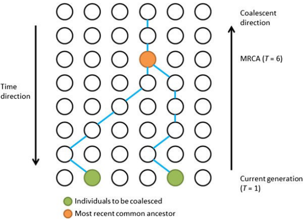
11 Population Analysis
SNPs, or Single Nucleotide Polymorphisms, are changes that occur in our genetic code over long periods. Imagine them as tiny mutations that happen naturally in our DNA as time goes on. In humans, the mutation rate - the rate at which these changes happen - is around 0.5 to 1 mutation per 100 million base pairs in just one generation. This means about 70 to 80 mutations can occur in each person.
These changes aren’t predictable and happen randomly, and they are quite uncommon. However, when we find the same SNPs shared among different individuals, it gives us clues about their shared ancestors.
Scientists use a theory called coalescent theory to understand this. This theory says that any two sets of genes or genomes will always have an ancestor they both come from.
When two people share a lot of SNPs, it means they probably have similar ancestors in their family trees. On the other hand, if their SNPs are different, it shows that their genetic sequences have traveled a longer evolutionary distance apart.
Scientists can use this information to trace back and find the most recent common ancestor (MRCA) shared by two individuals or groups.
The neutral theory of evolution suggests that a lot of the changes or mutations happening in our genetic code don’t really affect how an organism survives or thrives. These mutations are considered neutral because they don’t give any advantage or disadvantage in the environment. Imagine these changes as happening randomly, without impacting an individual’s chances of survival.
Drift, another concept in genetics, is responsible for explaining most of the patterns we see in SNPs (those small genetic differences). Drift refers to random changes in the frequency of certain genetic traits within a population over time.
Most of these SNP patterns we observe in populations are because of shared ancestry. This means that when we look at the differences and similarities in these small genetic differences among people, we can understand how different groups or populations are related to each other.
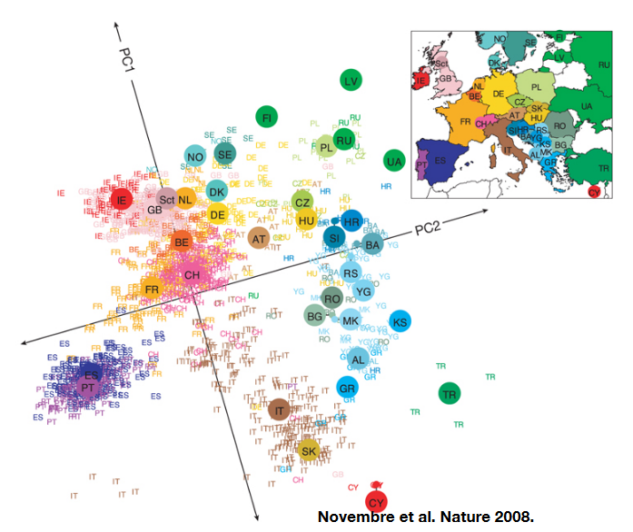
To help visualize how populations are structured based on these SNPs, scientists use a method called Principal Component Analysis (PCA). They organize the SNP data into a matrix where each SNP is represented by numbers: 0, 1, or 2 (showing the number of alternative forms of a particular gene). By analyzing this data, they can see that individuals who have similar patterns of these genetic differences are grouped closer together.
11.1 Key Concepts and Terms
11.1.1 Admixture
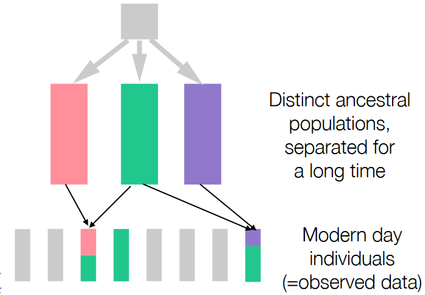
Admixture is a concept that helps scientists divide or separate genetic data into groups that represent different ancestral populations. These groups have variations in the frequencies of certain forms of genes (alleles) across their genomes.
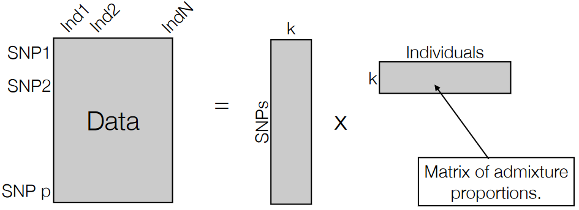
In this process, scientists aim to categorize the data into k groups, each representing a population with its unique allele frequencies. This method helps to understand how various genetic variations are distributed among different populations.
Admixture can be thought of as a specific type of Principal Component Analysis (PCA), a statistical technique used to simplify complex data.
11.1.2 Deep Coalesence
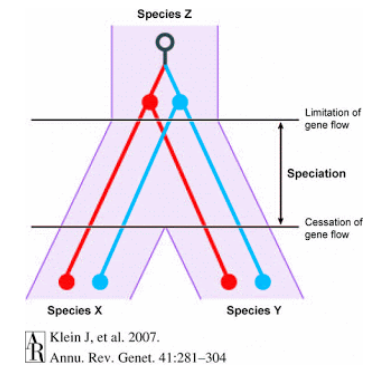
Deep coalescence refers to a situation where a specific genetic variation, like a SNP (Single Nucleotide Polymorphism), existed in a common ancestor of two different species. This means that this genetic difference, represented by the SNP, was present before these species branched off and became distinct from each other.
When scientists identify a SNP that is shared between two different species, it suggests that this particular genetic variation dates back to a time before these species evolved separately. The “deep” aspect refers to the fact that this genetic variation’s origin predates the actual separation of these species into distinct evolutionary paths.
Incomplete lineage sorting occurs when genetic variations, including SNPs, are inherited from a common ancestor but don’t align neatly with the species’ evolutionary tree. This happens because, over generations, genetic diversity is maintained within a population due to both ancestral genetic differences and random genetic drift. When these variations persist and get passed on to subsequent generations, they might not conform to the species tree we construct based on other evidence, like fossils or morphological features.
Both these phenomena—ancestral polymorphism (genetic differences in a common ancestor) and genetic drift (random changes in genetic frequency)—can cause incomplete lineage sorting. This results in the SNP pattern not following the expected species evolutionary tree because some genetic variations persist across lineages despite the species branching out from a common ancestor.
11.2 Genetic Distances
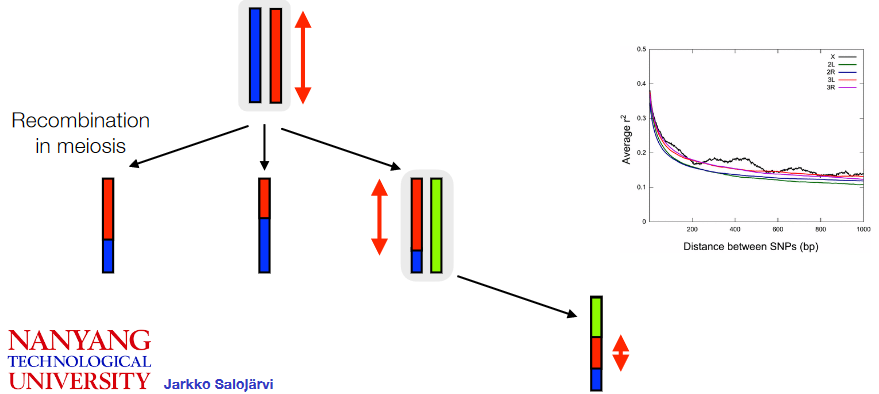
Recombination is a genetic process where sections of DNA, including SNPs (Single Nucleotide Polymorphisms), are shuffled or exchanged between chromosomes during cell division. This process results in new combinations of genetic variations.
One important aspect related to SNPs and recombination is linkage disequilibrium. Linkage disequilibrium refers to the non-random association or correlation of specific alleles at two different locations in the genome within a general population. This means that certain alleles at different locations tend to occur together more frequently than would be expected by chance.
SNPs that are physically close to each other on the genome tend to exhibit higher linkage disequilibrium, meaning they are more likely to be inherited together. However, as the distance between SNPs increases along the genome, the degree of correlation or linkage disequilibrium between them decreases.
The concept of a haplotype block is related to linkage disequilibrium and recombination. A haplotype block refers to a region in the genome where specific sets of alleles are inherited together as a result of limited or no history of recombination. In these blocks, certain combinations of genetic variations tend to stay together across generations because they are less likely to be broken apart by the recombination process.
11.2.1 Calculating Genetic Distances
Genetic distance refers to a measure used to understand how closely related two individuals are based on their genetic information, particularly Single Nucleotide Polymorphisms (SNPs).
One way to calculate this relatedness is through the concept of Identity by State (IBS) distance. IBS distance looks at long stretches of the genome where two individuals share at least one allele (or genetic variant) at each location. By identifying these continuous regions where the genetic information matches between two individuals, scientists can gauge their genetic relatedness.
Ideally, the best method to determine genetic distance would involve identifying haplotype blocks, which are regions of the genome where specific combinations of alleles tend to be inherited together. Comparing these blocks between two individuals’ genomes would give a precise measure of relatedness. However, this method requires information about the complete sequences of these blocks, which is often not available from standard sequencing data. This limitation arises because the individual reads obtained from sequencing are usually too short to cover entire haplotypes.
As a result, IBS distance calculates relatedness by considering scenarios where at least one of the underlying haplotypes could be shared between two individuals. The longer the matching regions of genetic information (indicating the potential sharing of a common haplotype block), the closer the genetic relatedness between the individuals.
11.2.2 IBS Distances
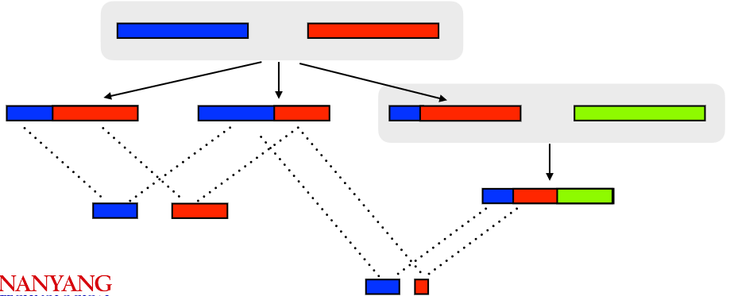
Identity by State (IBS) distance is a method used to measure genetic relatedness between individuals by examining long shared segments of their DNA known as haplotype blocks. These haplotype blocks are regions in the genome where certain combinations of genetic variants tend to be inherited together.
One key characteristic of IBS distance is that as the genetic distance between individuals increases, the length of these shared haplotype blocks tends to decrease. In other words, when two individuals are more distantly related, they are less likely to share long stretches of identical genetic information.
While IBS distance provides a useful measure of genetic relatedness based on these shared haplotype blocks, for a more accurate and detailed understanding of exact relationships between individuals, a closer analysis of these haplotype blocks becomes necessary.
11.2.3 Tracking Genealogy
Public companies specializing in genetic testing, like 23andMe, circleDNA, and Nebula Genomics, use various technologies to analyze Single Nucleotide Polymorphisms (SNPs) in individuals’ DNA.
These companies employ different methods such as SNP chips (used by 23andMe), whole exome sequencing (used by circleDNA), and whole-genome sequencing (used by Nebula Genomics) to decode and interpret genetic information. They have amassed a substantial database, collectively having over 25 million people enrolled.
When individuals send in their DNA samples, these companies compare the genetic information in these samples to others in their databases. By doing so, they can identify long segments of shared genetic information known as Identity by State (IBS) stretches, helping to trace relatedness and ancestry among different individuals.
This analysis enables these companies to determine potential relatives by identifying shared genetic markers. Moreover, they can provide insights into an individual’s ethnic background based on the genetic information obtained.
Additionally, these genetic testing services compare an individual’s DNA to known genetic markers associated with certain diseases or specific traits. This helps users understand their potential genetic predispositions to certain health conditions or their likelihood of expressing particular characteristics.
However, it’s essential to note that while these associations between genetic markers and traits exist, they often have relatively weak correlations. This is sometimes referred to as “missing heritability,” where the identified genetic markers do not fully explain the inheritance or development of certain traits or diseases. There are likely other genetic or environmental factors that play significant roles, beyond what is currently identified through these associations
11.2.3.1 Security Issues?
The convenience of genetic testing and tracking genealogy comes with potential security and privacy concerns:
Firstly, when you submit your DNA to a company, your genetic information becomes part of their database. This information, including your SNPs (Single Nucleotide Polymorphisms), can be used to find new connections between your genetic makeup and certain traits or conditions. Big medical companies find large SNP databases incredibly valuable for their research purposes.
There’s a particular interest in identifying “natural gene knock-outs,” which are genetic variations that eliminate the function of a certain gene. Understanding these can shed light on how genes influence traits or diseases.
Moreover, several companies like GEDmatch, MyHeritage, FamilyTreeDNA, and LivingDNA allow individuals to deposit their genetic data and compare it against their databases. This exchange of information can reveal extensive details about an individual’s genetic makeup.
Unfortunately, these databases are susceptible to potential breaches in genetic privacy. Tailor-made data queries can exploit these databases, revealing more information than intended or agreed upon.
As legislation struggles to keep pace with this rapidly evolving field, there’s a concerning gap in regulation to protect individuals’ genetic privacy. The novelty of genetic testing and genealogical tracking means that the legal framework is not yet comprehensive enough to address the risks adequately.
11.3 Species versus Populations
Species are distinct groups of organisms that are capable of interbreeding and producing fertile offspring. They are characterized by significant differences in their genetic makeup, physical characteristics, and behaviors. The variation observed between different species tends to be greater than the variation seen within populations of the same species.
The divergence between species arises from evolutionary processes over extended periods. A common ancestor shared by two different species existed far back in time, often millions of years ago. This prolonged separation allowed for substantial genetic and phenotypic differences to accumulate, leading to the development of reproductive barriers.
Reproductive barriers are mechanisms or traits that prevent two different species from interbreeding successfully or producing fertile offspring. Over time, these barriers become established and can include differences in mating behaviors, genetic incompatibility, physical barriers, or ecological factors.
One way of defining a species is by assessing the presence of reproductive barriers. When enough time has passed for these barriers to evolve and prevent gene flow between populations, scientists consider these populations as distinct species. In simpler terms, if groups of organisms have been separated long enough to develop mechanisms that prevent them from successfully interbreeding, they are typically classified as different species.
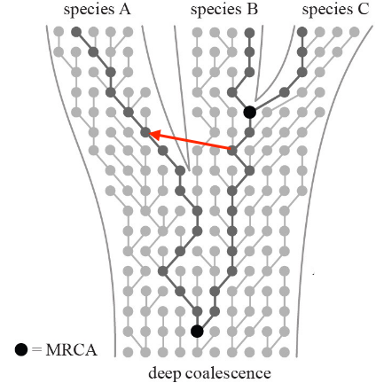
When individuals from two different species mate before the complete formation of reproductive barriers, a process called “introgression” can occur.
Introgression involves the transfer of genetic material between two distinct species through hybridization, where individuals from different species interbreed and produce offspring. In these cases, the genetic material from one species crosses into the gene pool of the other species.
This exchange of genetic material can lead to the incorporation of genes from one species into the genome of the other. Sometimes, this can result in hybrids that possess a mixture of characteristics from both parent species.
The extent and impact of introgression can vary. In some cases, if the hybrid offspring are not reproductively isolated from either parent species, they might continue to breed with one or both parent species. Over time, this process can lead to the spread of genetic material across the species boundary.
Introgression can have significant effects on the genetic diversity and evolutionary trajectories of species. It can potentially influence the adaptation and evolution of species by introducing new genetic variations into their gene pools. Additionally, introgression can blur the lines between distinct species, making it more challenging to delineate boundaries between them based solely on genetic markers
11.3.1 Tests for Introgression?
Do look at the slides to know more about this (i.e., prof. Jarkko talks about how the F3 introgression test works in more detail on that slide)!
11.3.1.1 F3 Introgression Test
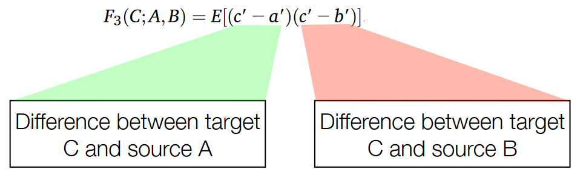
Positive evidence of introgression can be identified through statistical analyses that assess the patterns of genetic variation within genomes.
When there’s no introgression between two populations or species, the genetic variations such as positive and negative values occur randomly throughout the genome. However, when introgression has taken place, certain statistical methods can reveal a skewed pattern in these genetic variations.
One such method involves calculating a statistic known as the F3 statistic and comparing it to an expected score based on the null hypothesis, which assumes random genetic variation. The distribution of this statistic under the null hypothesis can be determined by simulations or random sequences.
In cases where introgression has occurred, there tends to be an excess of negative values compared to positive values when calculating the F3 statistic across the genome. This skewed distribution with a prevalence of highly negative values indicates a signal of introgression.
To further evaluate the significance of this signal, statistical techniques can be applied to assess the likelihood of observing such a pattern under the null hypothesis. This evaluation can yield a p-value, indicating the probability of obtaining the observed pattern if there were no introgression. A low p-value suggests strong evidence against the null hypothesis and supports the presence of introgression.
To determine the direction of gene flow or introgression between two test populations, an additional species, typically an outgroup species (O), is introduced to serve as a reference point for ancestral allele states. This outgroup species is evolutionarily distant from the populations being studied and provides a baseline for understanding genetic changes that occurred before divergence.
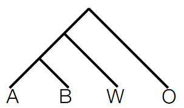
The setup involves several components:
Outgroup species (O): This species, like chimpanzees for humans, serves as a reference to identify ancestral allele states. By comparing the genetic sequences of the outgroup species with those of the test populations, scientists can infer the ancestral alleles shared between the outgroup and the test populations before any introgression events.
Second species (W): This species is considered a possible source of introgression. By comparing the genetic sequences of the second species with the test populations, scientists can identify genetic variations that may have been introduced via introgression.
Test populations (A and B): These are the populations being studied for introgression. By comparing their genetic sequences with the outgroup species and the second species, scientists can assess which genetic variations are shared with the outgroup (ancestral) and which are specific to the second species (potential introgression).
By analyzing the genetic variations shared between the outgroup species, the second species, and the test populations, researchers can deduce the direction of gene flow. If specific genetic variations are present in the second species (W) and also found in test population A but not in test population B, it suggests that gene flow occurred from species W into population A. Conversely, if these variations are found in population B but not in A, it indicates gene flow in the opposite direction.
11.3.2 Tests for Directionality
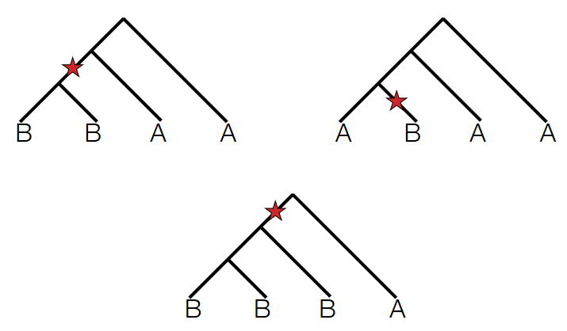
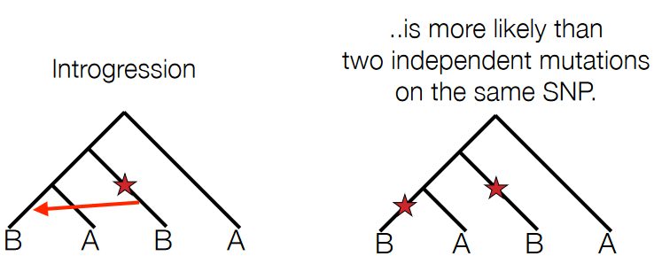
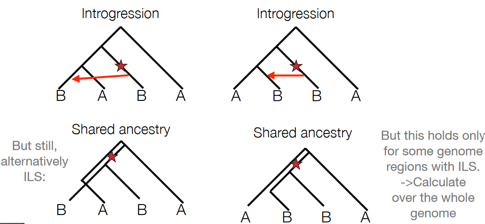
To test for the directionality of introgression or gene flow between populations, scientists often search for Single Nucleotide Polymorphisms (SNPs) that exhibit two derived alleles.
Derived alleles refer to genetic variants that are not present in the ancestral population or outgroup. When examining SNPs in test populations A and B and comparing them with an outgroup species, if a particular SNP shows two derived alleles (meaning both populations have a unique allele not found in the outgroup), it suggests a potential introgression event.
The key aspect scientists focus on is asymmetry in the distribution of these derived alleles between the two test populations. If, for example, the SNP has derived alleles that are present predominantly or exclusively in population A and not in population B, it indicates a higher likelihood of gene flow or introgression from another source into population A.
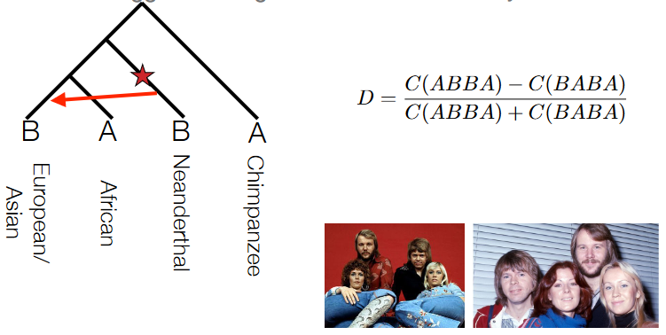
The ABBA-BABA test, also known as the D-statistic or Patterson’s D, is a method used in population genetics to detect introgression or gene flow between populations.
The test involves counting the occurrences of different allele configurations across multiple loci or genomic regions within four different populations or groups (A, B, W, and O). Specifically, researchers count how many times the pattern ABBA occurs versus the pattern BABA across these populations at various genetic loci.
In scenarios where genetic variations are randomly distributed or shaped only by drift (i.e., no gene flow between populations), the difference between the occurrences of ABBA and BABA should be close to zero when calculated across the entire genome.
However, when there’s introgression or shared ancestry between populations, the ABBA and BABA counts will differ significantly from zero. A non-zero or highly non-zero value indicates a deviation from the expected pattern, suggesting potential gene flow or introgression between the studied populations.
11.4 Population History
The coalescent theory is a mathematical model used in population genetics to understand how gene variants sampled from a population trace back to a common ancestor. This theory helps us examine the historical patterns of genetic variation within populations.
Imagine looking backward in time, tracing the ancestry of gene variants present in a population. The coalescent theory explores this genetic history by simulating the merging of alleles, or gene variants, into a single common ancestral copy through a series of random coalescence events.
These coalescence events represent moments when gene variants from different individuals in a population merge into a single common ancestor. The model calculates the time or number of generations it takes for these variants to converge and share a common ancestral copy.
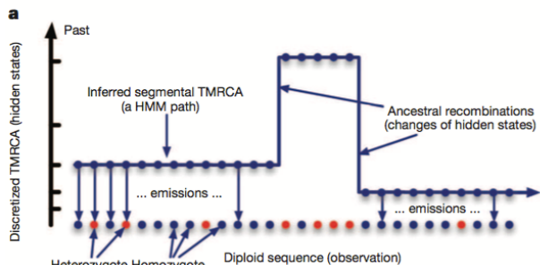
One method involves segmenting the individual’s genome into regions with varying levels of heterozygosity, which refers to having different versions of a gene in an individual’s genome. Higher heterozygosity indicates regions where the genetic material originated from a more distant common ancestor, representing deeper coalescence events. In contrast, lower heterozygosity regions suggest genetic material that traces back to a more recent common ancestor.
These different segments or regions of varying heterozygosity provide insights into the historical recombination events that occurred in the population’s past. Recombination refers to the shuffling of genetic material during reproduction, resulting in new combinations of genetic variants.
Regions with many splits or changes in heterozygosity levels signify past ancestral recombination events. The number of these recombination events is often linked to the historical population size. Larger populations tend to have more recombination events due to increased genetic diversity and more opportunities for genetic material to mix during reproduction.
11.4.1 Site Frequency Spectrum
The site frequency spectrum (SFS) is an alternative method in population genetics used to analyze genetic variation within a population. It involves creating a histogram that shows the frequency of a particular allele (often a derived allele) across the population.
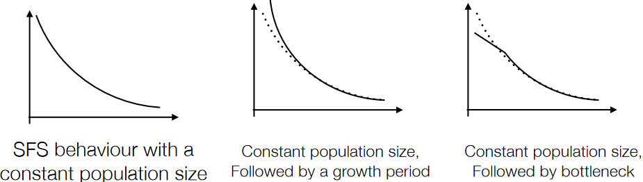
Ideally, the SFS is created by comparing the frequencies of alleles in the studied population with the ancestral genome. However, if the ancestral genome is not available, the “folded” spectrum is used. The folded spectrum combines the frequencies of derived alleles with their complementary ancestral alleles, which means fixated alleles (those that have completely replaced the ancestral form) and rare SNPs can’t be distinguished. This leads to a reduction in resolution as information about these alleles becomes limited.
Different population histories result in distinct site frequency spectra. The goal with this method is to identify the historical scenario that is most likely to have produced the observed spectrum.
11.5 Causative Mutations
Causative mutations refer to genetic alterations that directly impact the function or structure of proteins encoded by specific genes. These mutations can lead to changes in the amino acid sequence of a protein, which might affect its normal function or activity.
When a mutation alters the sequence of amino acids in a protein, it can result in various outcomes. For instance, it might modify the protein’s shape or ability to interact with other molecules, affecting its function. In the most extreme cases, a mutation can introduce a premature STOP codon in the genetic code, causing the protein to be shorter than normal or non-functional.
These mutations that cause changes in protein structure or function are often referred to as “natural mutants.” However, it’s important to note that most of these mutations tend to reduce the fitness or health of an organism rather than improve it. In other words, they usually have negative effects on the organism’s ability to survive, reproduce, or function optimally within its environment.
While some mutations might have neutral or even beneficial effects under certain conditions, many causative mutations are associated with detrimental outcomes. They can lead to various genetic disorders, diseases, or functional impairments in organisms by disrupting normal biological processes or cellular functions.
11.5.1 Beneficial Mutations
Beneficial mutations are genetic changes that confer advantages to an organism, increasing its fitness or survival in a particular environment. Unlike deleterious mutations that decrease fitness, beneficial mutations lead to positive selection, causing their allele frequencies to rise rapidly over successive generations within a population.
Imagine if “LAZY” were a beneficial mutation instead of a slightly deleterious one. In this case, individuals carrying the beneficial mutation would have a higher chance of surviving, reproducing, or thriving in their environment compared to others without the mutation. This advantage would lead to the rapid increase in the frequency of the mutated allele in the population.
As this advantageous allele becomes more prevalent, it undergoes a process known as genomic hitchhiking. Alleles that are physically close to the beneficial mutation on the chromosome also experience an increase in frequency because they are in linkage disequilibrium with the advantageous allele. Linkage disequilibrium refers to the non-random association of alleles at different loci.
The phenomenon of genomic sweeps occurs as a result of this process. Genomic sweeps involve regions in the genome with fewer genetic variations or Single Nucleotide Polymorphisms (SNPs) due to the fixation of alleles associated with the beneficial mutation. Essentially, all the alleles in that region have reached fixation, resulting in reduced genetic diversity in those specific genomic regions across the population.
11.5.2 Sweep Analysis
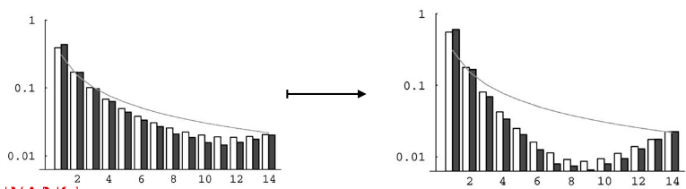
During a selective sweep, a beneficial mutation increases in frequency and leads to a reduction in genetic diversity in the surrounding genomic area. One consequence is a decrease in the number of intermediate-frequency alleles in the region affected by the sweep.
Linked genetic variations, particularly those associated with the beneficial allele, experience an increase in frequency due to the selective sweep. These intermediate alleles linked to the advantageous mutation tend to shift toward higher frequencies, transforming into high-frequency Single Nucleotide Polymorphisms (SNPs) within the affected region.
As the sweep progresses and the advantageous allele reaches fixation or near-fixation in the population, a new scenario emerges. Following the sweep, new mutations begin to accumulate in the region previously impacted by the selective sweep.
11.5.2.1 One Possible Approach
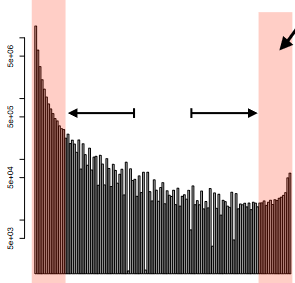
This method involves assessing the frequency of derived alleles—genetic variants that differ from the ancestral form—near the SNP subjected to selection. When a beneficial mutation undergoes a selective sweep, a notable increase in high-frequency derived alleles is observed, signifying that these SNPs have reached fixation in the population due to positive selection.
Conversely, the presence of low-frequency derived alleles indicates the emergence of new genetic variations subsequent to the selective sweep. During this process, the number of intermediate-frequency alleles typically decreases due to the impact of the sweep.
To perform this analysis, researchers calculate the site frequency spectrum (SFS) locally around the SNP of interest. The SFS represents the distribution of allele frequencies in a specific genomic region. By comparing this local SFS to the average SFS across the entire genome, scientists can identify deviations or shifts in allele frequencies caused by the selective sweep.